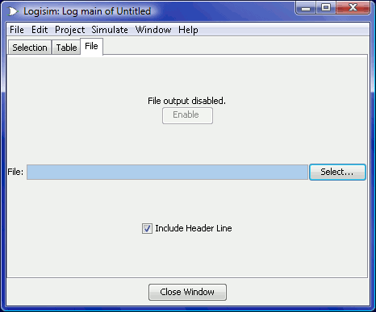

文件选项卡用于指定一个存放日志的文件。

顶部有一个指示器，显示文件日志记录是否正在进行，旁边还有一个用于启用或禁用文件日志的按钮。（请注意，在下方选择文件之前，无法启用文件日志。）可以用该按钮暂停和重新开始文件记录。当您在项目窗口中切换到查看另一个仿真时，文件日志会自动停止；如果返回到原来的仿真并希望日志继续，则需要使用顶部的按钮手动重新启用文件日志。
中间有一个指示器，显示正在记录日志的文件。要更改它，请使用“选择...”按钮。选择文件后，文件日志将自动开始。如果您选择一个已存在的文件，Logisim 会询问您是覆盖该文件还是将新条目追加到文件末尾。
在底部，您可以控制是否在文件中放置标题行，以指示所选内容中包含哪些项目。如果添加了标题行，那么每当所选内容发生变化时，都会在文件中放置一个新的标题行。
条目以制表符分隔的格式放入文件中，与“表格”选项卡下显示的内容非常接近。（一个区别是，任何标题行都会给出位于子电路中的组件的完整路径。）该格式有意保持简单，以便您可以将其输入到其他程序中进行处理，例如 Python/Perl 脚本或电子表格程序。
为了让脚本能够在 Logisim 运行的同时处理文件，Logisim 会每 500 毫秒将新记录刷新到磁盘上。请注意，在仿真过程中，Logisim 也可能会间歇性地关闭并随后重新打开文件，尤其是在几秒钟内没有添加任何新记录的情况下。
下一节： 用户指南。